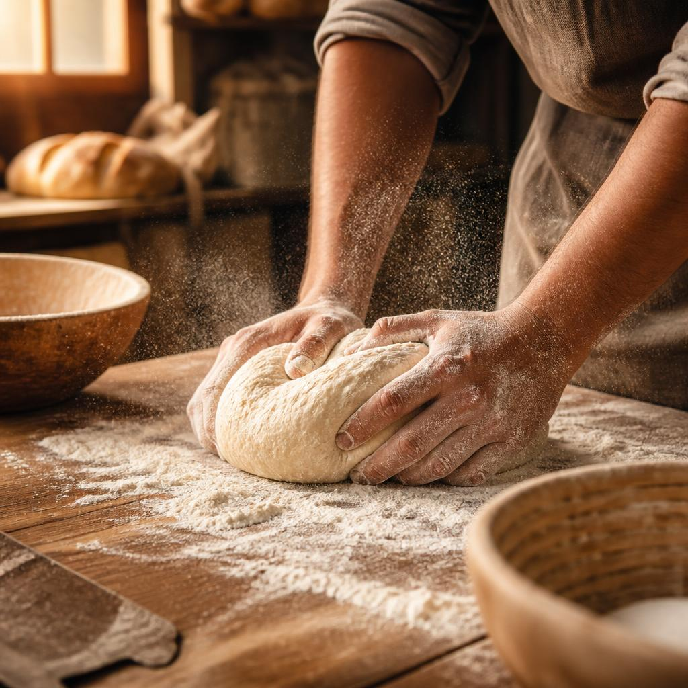
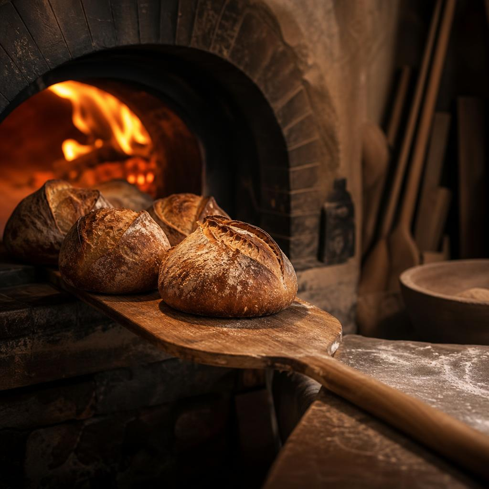

Somos tres compañeros que queríamos algo mejor que los muffins de siempre. Empezamos aprendiendo a mezclar, fermentar y hornear hasta convertir una pequeña idea en La Miga Dorada.
"No hacemos pan rápido. Hacemos pan que vale la pena esperar."
Nos levantamos temprano para que tú puedas desayunar con pan recién hecho. Fermentamos lento, horneamos en lotes pequeños y solo vendemos lo que salió del horno ese día. Si algo no salió perfecto, no sale del mostrador.
Ingredientes simples y seleccionados.
Tiempo para desarrollar sabor y textura.
Calor, paciencia y el momento exacto.

Todo lo que vendemos se hornea el mismo día, en tandas pequeñas. Cuando se acaba, se acaba. Por eso el puesto #4 huele a pan desde temprano.
Hacer un pedido